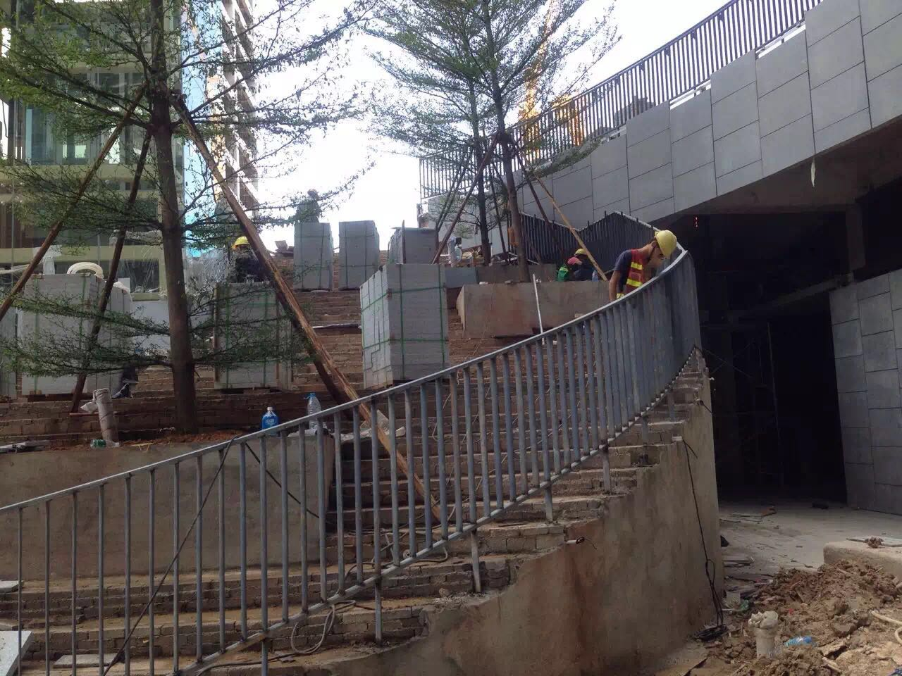

广州市番禺区豪越铁艺金属铁制厂
陈锦波：13590193725
公司注册地址： 广州市番禺区豪越铁艺金属铁制厂
主营产品： 其他门 护栏、护栏网 其他窗 金属建材,別墅大门、豪华电动大门庭院小门、艺术门花、窗花、 工程围栏、阳台护栏、艺术屏风、花架、玄关台等家私铁艺精品。

广州市番禺区豪越铁艺金属铁制厂专业生产制造: 別墅大门、豪华电动大门庭院小门、艺术门花、窗花、 工程围栏、阳台护栏、艺术屏风、花架、玄关台等家私铁艺精品。 DA 铁艺、铁饰铁件在国内独树一致，它取欧洲的铁艺之精髓，是中西文化的艺术结晶。其制作古朴、高雅、充满欧洲情怀， 具有欧式生活的浪漫情调与东方艺术的纯朴，高雅融为一体，它将给您创造高贵典雅的艺DA。
广州番禺弘发铁艺厂工程实例遍及，如广州华南碧桂园、广州碧桂园、顺德碧桂园、珊瑚湾半岛、锦绣银湾、丽江花园、祈福新邨、帝景山庄、麓湖名轩、凤凰城、南浦海滨花园、花都假日半岛等各类中高档小区都留下了弘发铁艺厂的铁艺精品（详参考图片）。依靠多年的经验积累和技术人员的不懈努力，本厂生产的铁艺以优质的产品、合理的价值和完善的服务受到广大客户的信任和赞许。